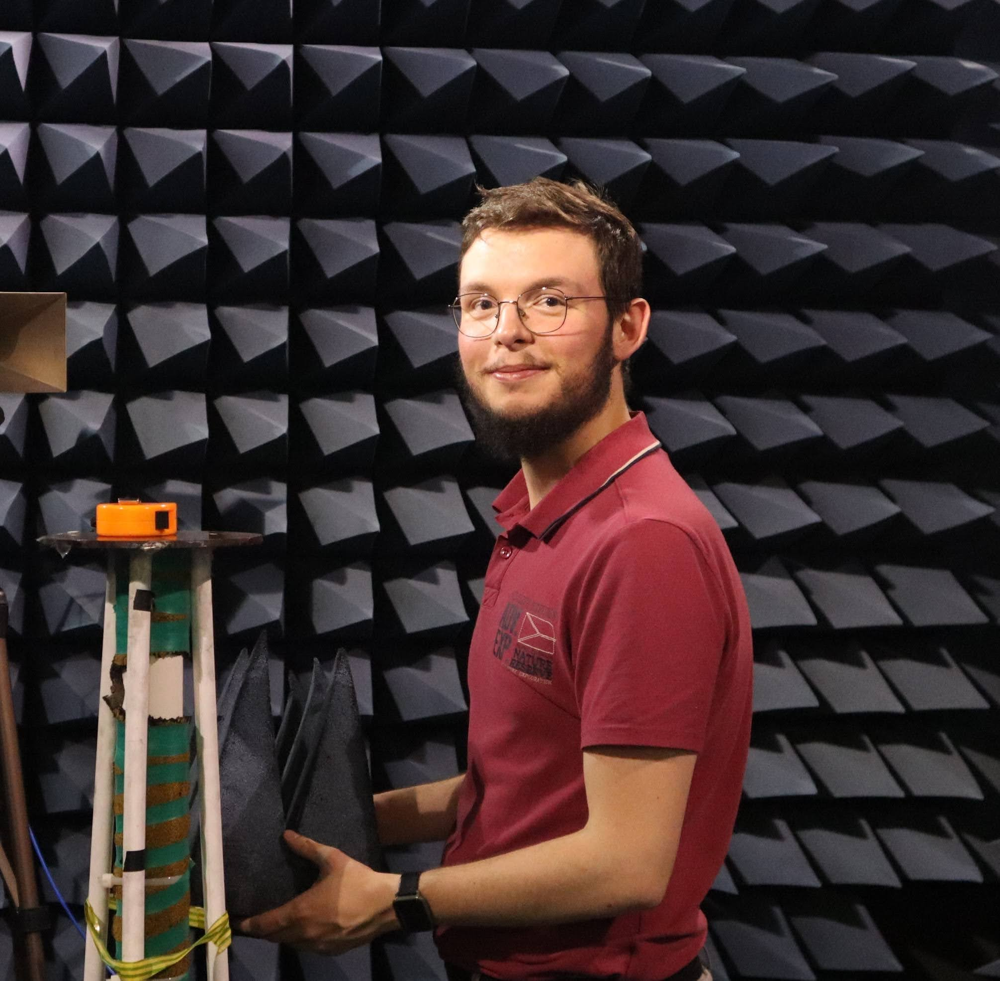

Active members
in chronological order of joining
Lab's Lead
Dr Mahmoud Wagih
Lead (PI)
Lead/co-lead on £1M/£4M research projects spanning the RF-enabled electronics spectrum.
Knows something about every active research topic here; (might still) know everything about some topics.
Antennas: Wireless Power

Andrzej Dudek
Visiting Postgraduate Researcher
EuMA Microwave Internship Awardee
Designed large 2.4 GHz metasurfaces, very small 300 GHz antennas, and tested metres-long transmission lines.
Embedded Systems: RF Sensing

James Stephenson
Research Project Assistant
IEEE Antennas and Propagation Research Scholarship Awardee. EW Brightsparks Awardee.
"Re-joining" after a successful group project at UofG School of Computing
Written lots of embedded C, tested many antennas, and really likes Python.
Antennas & Wireless Power: Biomedical

Nikolas Bruce
Postgraduate Researcher
"Re-joining" after a successful Biomedical BEng project, published in an IEEE paper, at JWSE.
Designed several antennas, formulated many implantable test phantoms, and now over to growing/preventing bacteria.
Integrated Circuits: Wireless Power

Sitong Mu
Postgraduate Researcher
"Re-joining" after a successful MSc project, in preparation for publication, at JWSE.
Designed many rectifiers and collected a 10,000 entry dataset, now exploring CMOS RFICs.
Co-supervised by Prof. Hadi Heidari
Advanced Materials: RF Sensing
Johannes Schneider
Research Assistant in Additive Electronics
An experienced material scientist supporting an inter-disciplinary advanced RF materials project from DSTL.
Additively manufacturing and formulating everything, from sensing composites to liquid metals.
Antennas & Wireless Power: RF Sensing

Dr Manoj Kumar
Research Associate
An experienced researcher with extensive track record in rectennas.
Working at the interface of advanced materials and antenna-enabled sensors.
Advanced Materials: Sustainable Electronics
Dr Benjamin King
Research Associate
An experienced chemical engineer with expertise across large-area electronics and devices.
Learnt RF engineering 101 in 10 days!
RF Systems: Sustainable Electronics
YOU?
Research Assistant/Associate
If you are experienced in building electronic systems with a solid RF/microwave background please contact Dr. Mahmoud Wagih directly - we have upcoming research associate openings with several starting exciting projects.
Project Students within the Green RF-Enabled Electronics Lab
- MEng (Group 2): Torin S* (2023/24)
- MEng (Group 2): Eve M* (2023/24)
- MEng (Group 2): Ewan B* (2023/24)
- MEng (Group 2): Mairead R* (2023/24)
- MEng (Group 1): Dario P* (2023/24)
- MEng (Group 1): Haroun A* (2023/24)
- MEng (Group 1): Robert J* (2023/24)
- MEng (Group 1): Jed S* (2023/24)
- BEng: Lok Man S* (2023/24)
- BEng: Finlay S* (2023/24)
- BEng: James Stephenson (2023/24)
- BEng: Ben M* (2023/24)
- MSc: Midhun Mathew* (2022/23, rejoined as a project assistant)
- MSc: Mengyao L* (2022/23)
- MSc: Jinghong Yue (incoming PGR), (2022/23)
- MSc: Sitong Mu (now PGR), (2022/23)
- BEng: Nikolas Bruce (now PGR), (2022/23)
- BEng: George B* (2022/23)
Associated External Student Group Design Projects
Several of our research projects involved external student group design projects, who have contributed to designing applications and software feeding into our publications;
several students joined the lab on related projects. The projects are listed in chronological order.
Group Design Project - Electronics and Computer Science, University of Southampton
Matthew Chieng (Rejoiner);
Yan K*;
Abigail W.;
Joshua M*;
Alex S*
Project supervised by Prof. Steve Beeby